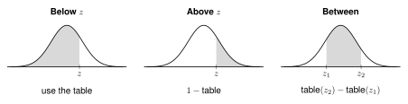

2.5 - Normal Calculations with a Z-Table
Adult women have a mean height of 64 inches and an SD of 3 inches. What percent are shorter than 68 inches?
68 is not 1, 2, or 3 SDs from the mean. The empirical rule cannot answer this. A z-table can.
Printable mini lesson - notes and practice problems to print and write on.
Z-table - the standard normal table, two pages. You need it for this lesson and the next.
Khan Academy: Unit 2, Lesson 5: Normal distribution calculations
👥 Learn Together
2.5.1 - Reading the Z-Table
The z-table gives the area to the left of \(z\). That is the proportion of the data below \(z\).
Example: Find the area below \(z = 1.33\).
- Go down to the row 1.3.
- Go across to the column .03.
- The area is .9082. About 90.82% of the data is below \(z = 1.33\).
2.5.2 - Below, Above, and Between

- Draw the curve. Shade the part the question asks about.
- Find each z-score: \(z = \dfrac{x - \mu}{\sigma}\). Round to 2 decimal places.
- Look up each z-score in the table.
- Below: use the table. Above: \(1 -\) table. Between: subtract the two table values.
Example: Heights of adult women: mean 64 inches, SD 3 inches.
| Question | Work | Answer |
|---|---|---|
| Shorter than 68 inches | \(z = \frac{68 - 64}{3} = 1.33\), table: .9082 | 90.82% |
| Taller than 68 inches | \(1 - .9082 = .0918\) | 9.18% |
| From 62 to 68 inches | \(z = \frac{62 - 64}{3} = -0.67\), table: .2514. Then \(.9082 - .2514 = .6568\) | 65.68% |
The table always gives the area below. For “more than” or “taller than”, subtract the table value from 1.
\(z = \frac{61 - 64}{3} = -1\). The table gives .1587.
\(1 - .1587 = .8413\). About 84.13% are taller than 61 inches.
✍️ Practice On Your Own
Work with a partner. Use the z-table. Compare answers when you finish each problem.
Reading the Table
Find the area below each z-score.
\(z = 1.25\)
\(z = -0.84\)
\(z = 2.00\)
\(z = -1.96\)
Find the area above each z-score.
\(z = 0.50\)
\(z = -1.20\)
Find the area between the two z-scores.
\(z = -1\) and \(z = 1\)
\(z = 0.5\) and \(z = 1.5\)
The empirical rule says about 68% of the data is within 1 SD of the mean. Compare this to your answer to 3(a). Do they agree? Explain.
In Context
Commute times to a school have a normal distribution with a mean of 25 minutes and an SD of 5 minutes. What percent of students have a commute:
less than 30 minutes?
more than 33 minutes?
from 20 to 28 minutes?
Apples from an orchard have a mean weight of 150 grams and an SD of 10 grams. The weights have a normal distribution.
The store sells apples over 165 grams as “extra large.” What percent of apples are extra large?
Apples under 138 grams are used for juice. What percent go to juice?